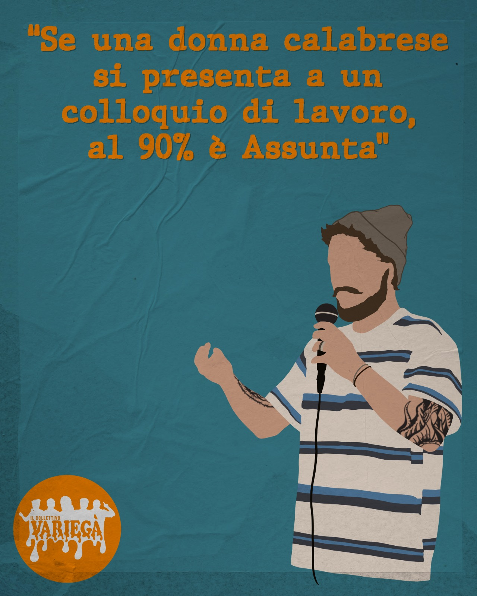

N° 01 / 05 · Gianluca Bolsieri
"Se una donna calabrese si presenta a un colloquio di lavoro, al 90% è Assunta."
Pavese DOC — e se lo chiami vogherese ti spara alla nuca. Sul palco porta un umorismo dark e viscerale che sa di cene di famiglia e brutte idee venute bene. Ride di tutto, soprattutto delle cose che fanno sanguinare il naso a sforzarsi di capirle.
Click per tornare